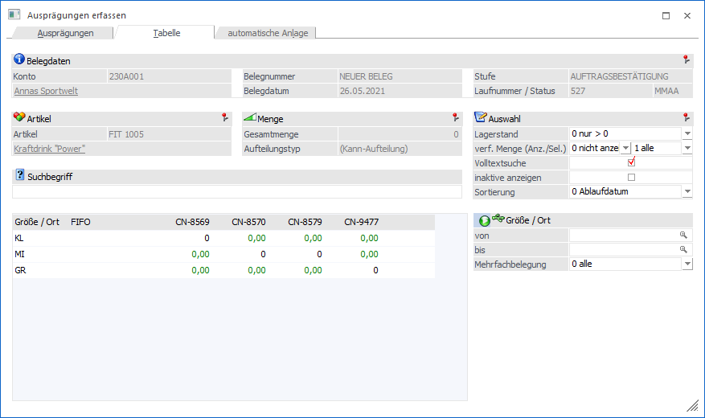
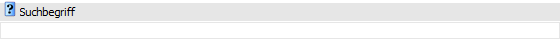
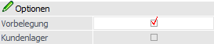
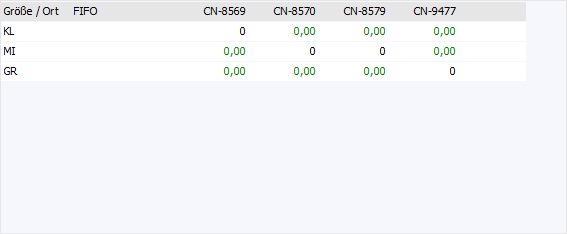
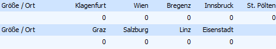
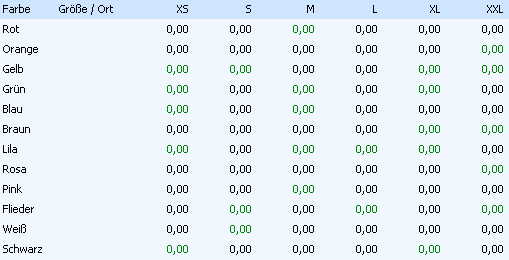
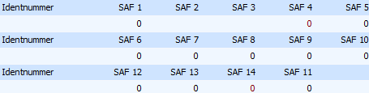
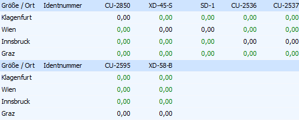
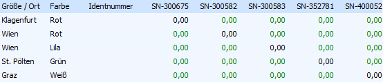

In dem Register "Tabelle" (erweiterte Ansicht) werden die Ausprägungen in Form einer Rastertabelle anzeigt, wobei nur die Eingabe von Mengen möglich ist (d.h. keine Neuanlage von Ausprägungen). Welche Ausprägungen hierbei angezeigt werden, erfolgt über die Definition von Einstellungen.
Hinweis
Die erweiterte Ansicht muss zunächst über den Button "erweiterte Ansicht" aktiviert werden.

Belegdaten (nur in Belegerfassung)

Wenn das Fenster "Ausprägungen erfassen" in der Belegerfassung geöffnet wird, so steht der Bereich "Belegdaten" zur Verfügung. Dort werden die relevanten Informationen, bezogen auf den aktuellen Beleg, dargestellt.
Artikel

An dieser Stelle wird der auszuprägende Hauptartikel mit Nummer und Bezeichnung angezeigt.
Menge

Ø Gesamtmenge / noch aufzuteilen / Restmenge
Abhängig vom Ausgangprogramm und dem Status der Erfassung wird hier die aktuell erfasste Gesamtmenge, die noch aufzuteilende Menge oder die Restmenge (WinLine PPS) ausgewiesen.
Ø Aufteilungstyp
An dieser Stelle wird der Aufteilungstyp dargestellt (Kann- oder Muss-Aufteilung), wobei die Grundeinstellung in den Aufteilungsoptionen (WinLine FAKT - Stammdaten - Ausprägungen - Aufteilungsoptionen) getroffen wird.
Auswahl

In diesem Bereich kann definiert werden, welche Informationen bzw. Ausprägungen grundsätzlich angezeigt werden sollen.
Ø Lagerstand
Durch die Auswahl "Lagerstand" können die darzustellenden Ausprägungen aufgrund des aktuellen Lagerstandes beeinflusst werden. Folgende Einstellungen stehen zur Auswahl:
ü 0 - nur > 0
Es werden nur
Zeilen mit einem Lagerstand größer Null angezeigt.
ü 1 - alle
Es werden alle Zeilen
angezeigt.
ü 2 - nur = 0
Es werden nur
Zeilen angezeigt, bei denen der Lagerstand Null ist.
ü 3 - nur <> 0
Es werden
nur Zeilen angezeigt, bei denen der Lagerstand größer oder kleiner Null ist.
Ø verf. Menge (Anzeige)
Diese Option wird in dem Register "Tabelle" nicht unterstützt.
Ø verf. Menge (Selektion)
An dieser Stelle kann definiert werden, welche Ausprägungen, abhängig von der verfügbaren Menge, angezeigt werden sollen. Folgende Einstellungen stehen zur Auswahl:
ü 0 - nur > 0
Es werden nur
Zeilen mit einer verfügbaren Menge größer Null angezeigt.
ü 1 - alle
Es werden alle Zeilen
angezeigt.
ü 2 - nur = 0
Es werden nur
Zeilen angezeigt, bei denen die verfügbare Menge Null ist.
ü 3 - nur <> 0
Es werden
nur Zeilen angezeigt, bei denen die verfügbare Menge größer oder kleiner Null
ist.
Ø Volltextsuche
Standardmäßig erfolgt die Suche linksbündig. Durch Aktivierung der Option "Volltextsuche" wird der Suchbegriff innerhalb des gesamten Wertes gesucht.
Ø inaktive anzeigen
Diese Option wird in dem Register "Tabelle" nicht unterstützt.
Ø Sortierung
Handelt es sich bei dem Ausprägungsartikel um einen Artikel mit LIFO- bzw. FIFO-Verfahren, dann steht zusätzlich die Funktion der Sortierung zur Verfügung. Über diese kann eingestellt werden, ob nach dem Ablaufdatum oder dem Eingangsdatum sortiert werden soll.
Hinweis
Ob aufsteigend oder absteigend sortiert werden soll ergibt die aus der Art des Verfahrens.
ü Ablaufdatum
ü LIFO-Verfahren
Der Artikel, mit
dem spätesten Ablaufdatum wird zuerst vorgeschlagen.
ü FIFO-Verfahren
Der Artikel, mit
dem frühesten Ablaufdatum wird zuerst vorgeschlagen
ü Eingangsdatum
ü LIFO-Verfahren
Der zuletzt
zugebuchte Artikel wird an erster Stelle vorgeschlagen.
ü FIFO-Verfahren
Der zuerst
zugebuchte Artikel wird an erster Stelle vorgeschlagen.
Suchbegriff

Ø Suchbegriff
An dieser Stelle kann durch die Eingabe eines Suchbegriffs nach Ausprägungen gesucht werden, wobei der Suchbereich die Artikelnummer, die Artikelbezeichnung, die Chargen- und die Identnummer umfasst.
Hinweis
Im Gegensatz zu der "normalen Ansicht" wird die Suche erst ausgelöst, sobald der eingegebene Suchbegriff mit Enter bestätigt wird. Außerdem ist eine Zwischenspeicherung nicht möglich, d.h. durch Anwahl des Buttons "Ok" bzw. der Taste F5 schließt sich das Fenster "Ausprägungen erfassen" und alle bis dahin getätigten Eingaben werden direkt übernommen.
Ausprägungsselektion

In dem Bereich "Ausprägungsselektion", welcher über den Button "Ausprägung 1" oder "Ausprägung 2" geöffnet wird, können weitere Selektionen bzw. Einstellungen für die Anzeige der Ausprägungen vorgenommen werden.
Ø Ausprägung 1 (hier: "Größe / Ort") / Ausprägung 2 (hier: "Farbe")
Wenn der Hauptartikel mit Ausprägung 1 und / oder Ausprägung 2 geführt wird, dann kann an dieser Stelle eine Selektion auf die anzuzeigenden Ausprägungen vorgenommen werden.
Hinweis
Durch Anwahl des Buttons  kann der Selektionsbereich geschlossen
werden.
kann der Selektionsbereich geschlossen
werden.
Ø Mehrfachbelegung
An dieser Stelle kann entschieden werden, welche Ausprägungen bei der Verwendung von Mehrfachbelegungen angezeigt werden sollen:
ü 0 - alle
ü 1 - nur belegte Ausprägungen
ü 2 - nur nicht belegte Ausprägungen
Optionen (nur in Belegerfassung)

Ø Vorbelegung
Wenn mit einer Vorbelegung der Ausprägungen gearbeitet wird (lt. Belegart oder durch einen manuellen Eintrag im Register "Zusatz" der Belegerfassung) und in der Belegerfassung der Button "Ausprägungsoptionen" auf "Aufteilungsfenster öffnen (Ausprägungen übernehmen)" gestellt ist, dann kann an dieser Stelle durch Aktivierung des Buttons die Vorbelegung in dem Selektionsbereich wiederhergestellt werden.
Ø Kundenlager
Diese Option wird in dem Register "Tabelle" nicht unterstützt.
Tabelle "Ausprägungen"

In der Ausprägungstabelle werden alle Ausprägungen gemäß der verwendeten Vorlage angezeigt. Ob dabei die Ausprägungskurzbezeichnung (auch "Kurzcode" oder "Kennzahl" genannt) oder die Ausprägungsbezeichnung für die Anzeige genutzt wird, kann über die Ausprägungsoptionen (WinLine FAKT - Ausprägungen - Ausprägungsoptionen - Register "Details" - Unterregister "Aufteilung" - Option "Langbezeichnung in Tabellenerfassung") definiert werden.
Hinweis
Wie viele Spalten pro Zeile dargestellt werden sollen, kann nur definiert werden, wenn in den Ausprägungsoptionen der Druck mittels Subformular aktiviert wurde (Option "Spalten pro Zeilen"). Ansonsten wird eine Standardanzahl genutzt.
Achtung
Artikel (Ausprägungen) für welche der Benutzer laut Berechtigungsprofil keine Berechtigung hat, werden hier im Gegensatz zu dem Register "Ausprägungen" angezeigt. Eine Mengeneingabe ist allerdings nicht möglich.
Ø Menge
An dieser Stelle wird die benötigte Menge hinterlegt.
Hinweis
Bei "inaktiven" Ausprägungen oder Ausprägungen ohne Berechtigung wird keine Zahl dargestellt. Sollte die Ausprägung noch nicht "freigegeben" sein, dann wird die Zahl "0" in Rot dargestellt. In allen drei Fällen ist eine Mengeneingabe nicht möglich.
Handelt es sich um eine Ausprägung, welche noch nicht als Stammdatensatz existiert, dann wird die Zahl in grün dargestellt und bei Eingabe einer Menge samt Speicherung wird die Ausprägung im Artikelstamm angelegt.
Hinweis 2
Folgende Punkte werden bei der Eingabe der Menge geprüft:
ü Belegerfassung
ü Liefersperre (lt. Einstellung in den Belegoptionen)
ü Verfügbare Menge in der Stufe "2 - Auftrag" (lt. Einstellung in der Belegart)
ü Lagerstandsunterschreitung ab der Stufe "3 - Lieferschein" (lt. Einstellung in der Belegart)
ü Allgemein
ü Mehrfachausprägung erlaubt (lt. Einstellung im Artikelstamm)
ü Menge bei Identnummernartikeln darf nur "1" oder "-1" betragen
ü Lagerstand bei Identnummernartikeln darf nach der Buchung nur "1", "0" oder "-1" betragen
Es gibt in diesem Register 5 verschiedene Darstellungsarten:
ü Artikel mit einer
Ausprägung
Die Ausprägungskurzbezeichnung bzw. die Ausprägungsbezeichnung
wird als Überschrift angezeigt und die Menge kann in der jeweiligen Zeile
darunter eingegeben werden.

ü Artikel mit zwei
Ausprägungen
Bei Artikeln mit zwei Ausprägungen wird die
Ausprägungskurzbezeichnung (bzw. die Ausprägungsbezeichnung) der Ausprägung 1
als Überschrift angezeigt. Die Bezeichnung der Ausprägung 2 wird hingegen in der
ersten Spalte angezeigt. Die Mengen können in der jeweiligen Zeile eingegeben
werden:

Hinweis
Wenn nur Artikel mit einem bestimmten Lagerstand (z.B. "nur > 0") angezeigt werden sollen, dann werden die Mengenfelder von Ausprägungen (welche nicht in die Einschränkung passen) aufgrund der Darstellungsstruktur weiterhin angezeigt. Diese sind jedoch nicht editierbar (Darstellung ohne Zahl).
Beispiel
Verwendung von Größe "37 bis 38" und Lagerort "Lager1 und Lager2". Es sind folgende Artikel angelegt:
ü Artikel in 37 und Lager1 (Lagerstand > 0)
ü Artikel in 37 und Lager2 (Lagerstand = 0)
ü Artikel in 38 und Lager2 (Lagerstand > 0)
Wenn alle Artikel angezeigt werden, werden die Artikel wie folgt dargestellt:
|
|
37 |
38 |
|
Lager1 |
Editierbar |
Neuanlage |
|
Lager2 |
Editierbar |
Editierbar |
Wenn nur Artikel mit Lagerstand > 0 angezeigt werden, werden die Artikel wie folgt dargestellt:
|
|
37 |
38 |
|
Lager1 |
Editierbar |
Neuanlage |
|
Lager2 |
Nicht Editierbar |
Editierbar |
ü Artikel mit Chargen- oder
Identnummern
Die Chargen- oder Identnummern werden als Überschrift angezeigt.
Die Mengen können in der jeweiligen Zeile darunter eingegeben
werden.

ü Artikel mit Chargen- oder
Identnummern und einer Ausprägung
Die Chargen- oder Identnummern werden als
Überschrift angezeigt. Die Bezeichnung der Ausprägung wird hingegen in der
ersten Spalte dargestellt. Die Menge kann in der jeweiligen Zeile eingegeben
werden.

Hinweis
Wenn nur Artikel mit einem bestimmten Lagerstand (z.B. "nur > 0") angezeigt werden sollen, dann werden die Mengenfelder von Ausprägungen (welche nicht in die Einschränkung passen) aufgrund der Darstellungsstruktur weiterhin angezeigt. Diese sind jedoch nicht editierbar (Darstellung ohne Zahl).
Beispiel
Verwendung von Größe "37 bis 38" mit unterschiedlichen Chargennummern. Es sind folgende Artikel angelegt:
ü Artikel in 37, Chargennummer 4711 (Lagerstand > 0)
ü Artikel in 37, Chargennummer 4712 (Lagerstand = 0)
ü Artikel in 38, Chargennummer 4712 (Lagerstand > 0)
Wenn alle Artikel angezeigt werden, werden die Artikel wie folgt dargestellt:
|
|
4711 |
4712 |
|
37 |
Editierbar |
Editierbar |
|
38 |
Neuanlage |
Editierbar |
Wenn nur Artikel mit Lagerstand > 0 angezeigt werden, werden die Artikel wie folgt dargestellt:
|
|
4711 |
4712 |
|
37 |
Editierbar |
Nicht Editierbar |
|
38 |
Neuanlage |
Editierbar |
ü Artikel mit Chargen- oder
Identnummern und zwei Ausprägungen
Die Chargen- oder Identnummern werden als
Überschrift angezeigt. Die Bezeichnung der Ausprägung 1 wird in der ersten
Spalte angezeigt und die Bezeichnung der Ausprägung 2 in der zweiten Spalte. Die
Menge kann in der jeweiligen Zeile eingegeben werden.

Hinweis
Wenn nur Artikel mit einem bestimmten Lagerstand (z.B. "nur > 0") angezeigt werden sollen, dann werden die Mengenfelder von Ausprägungen (welche nicht in die Einschränkung passen) aufgrund der Darstellungsstruktur weiterhin angezeigt. Diese sind jedoch nicht editierbar (Darstellung ohne Zahl).
Beispiel
Verwendung von Größe "37 bis 38", Lagerort "Lager1 und Lager2" und unterschiedlichen Chargennummern. Es sind folgende Artikel angelegt:
ü Artikel in 37 und Lager1, Chargennummer 4711 (Lagerstand > 0)
ü Artikel in 37 und Lager1, Chargennummer 4712 (Lagerstand = 0)
ü Artikel in 38 und Lager1, Chargennummer 4712 (Lagerstand > 0)
Wenn alle Artikel angezeigt werden, werden die Artikel wie folgt dargestellt:
|
|
|
4711 |
4712 |
|
37 |
Lager1 |
Editierbar |
Editierbar |
|
38 |
Lager1 |
Neuanlage |
Editierbar |
Wenn nur Artikel mit Lagerstand > 0 angezeigt werden, werden die Artikel wie folgt dargestellt:
|
|
|
4711 |
4712 |
|
37 |
Lager1 |
Editierbar |
Nicht Editierbar |
|
38 |
Lager1 |
Neuanlage |
Editierbar |